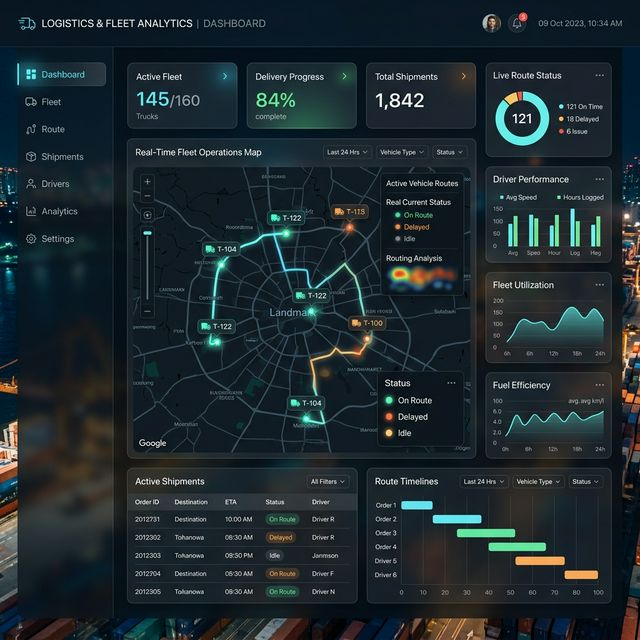

Dashboard Logística — Desempenho Operacional

Visão Geral do Projeto
Painel de Controle focado estritamente no desempenho operacional de frotas e logística. O projeto analisa minunciosamente os tempos de entrega (SLA), a roteirização, os motivos exatos que levam a devoluções de mercadorias no momento da entrega, e como estas oscilações impactam as métricas financeiras associadas aos fretes.
Resultados Principais
- Volume Movimentado: 8.026 ordens de frete totais no período de análise, indicando um crescimento na operação de +3.1%.
- Nível de Serviço (On-Time): 53.03% das entregas realizadas dentro da janela de compromisso com o cliente.
- Atrasos: 46.97% das entregas sofrem variação de aderência, algo passível de atuação através dos faróis de alerta implantados no dashboard.
- Ofensores: A análise demonstrou que grande parte do passivo na logística reversa e devolução tem sido o motivo de "Desistência do cliente".
Construção e Análise em Dados
O foco total durante a construção deste MVP no Power BI foi dar ao controlador de tráfego, ou gestor logístico, os "insights sobre a eficiência da frota". Ao navegar nos filtros é possível cruzar, por exemplo, o tipo de caminhão associado às maiores taxas de atraso, o que em base de dados de transportadoras revela o desgaste dos modais ou a capacidade de absorção volumétrica subutilizada.
Dashboard Interativo
Explore as visões das transportadoras, devoluções e fretes através da publicação web clicando no botão: